美國媒體視覺新聞趨勢與紐時視覺新聞工作流程
林辰峰 Jeremy C.F. Lin
我是誰？

2012年的視覺新聞
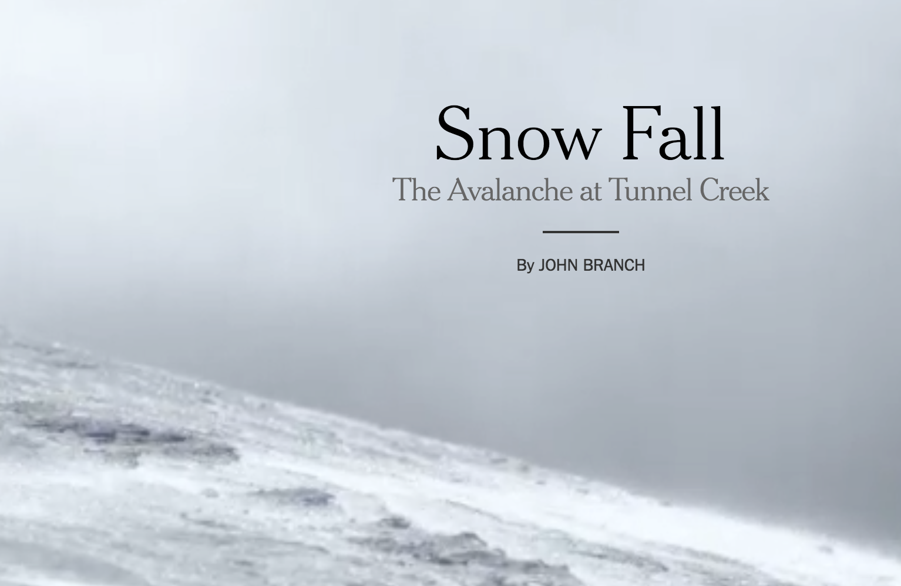2016年的視覺新聞
手機呈現
讀者閱讀習慣
科技
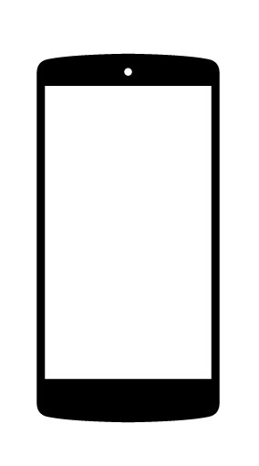重新定義互動新聞
- If you make the reader click or do anything other than scroll, something spectacular has to happen
- If you make a tooltip or rollover, assume no one will ever see it. If content is important for readers to see, don't hide it
- When deciding whether to make something interactive, remember that getting it to work on all platforms is expensive
減少互動
2012

減少互動
2015

用滾動取代點擊
- Scrolling（往下滾動）符合讀者使用電腦以及手機的習慣
- 沒有讀者喜歡點點去，尤其是當讀者在使用手機時
- Scrolling的線性天性尤其適合新聞內容呈現
用滾動取代點擊
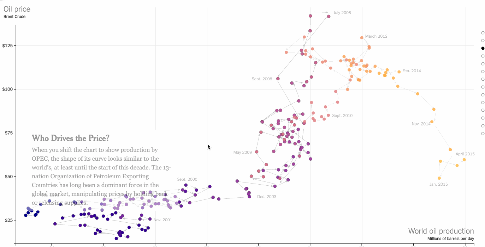當滾動成為敘事的一部分
讀者不用停下來去學習，閱讀也不會被干擾

當滾動成為敘事的一部分
讀者不用停下來去學習，閱讀也不會被干擾

Tooltips減少使用
- 無法手機顯示
- 讀者根本不會點
- 不要將資訊藏在互動裡
純平面資料視覺化的再興起
- 手機上顯示迅速
- 較不花時間製作
- 佔用新聞室資源較少
- ai2html
純平面資料視覺化的再興起

小短片與Gif
- 容易分享
- 畫面變化不多時，可以不斷加強讀者印象
- 常被拿來做解釋性新聞
延伸閱讀：On Repeat: How to Use Loops to Explain Anything by Lena Groeger
小短片與Gif
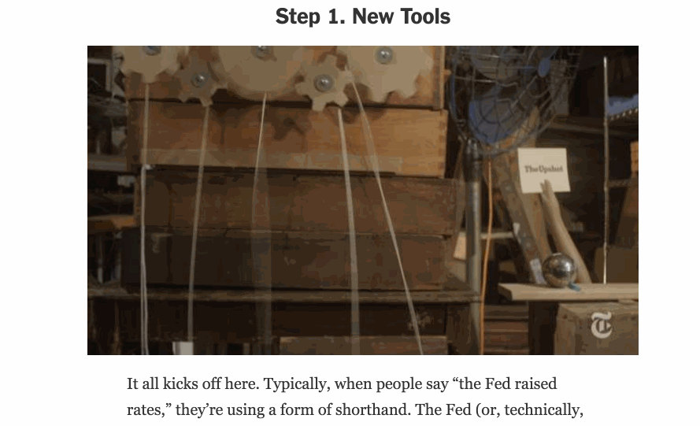小短片與Gif
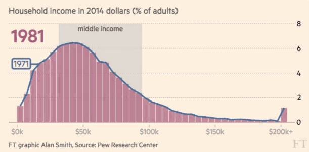用圖表以外的方式製作資料視覺化
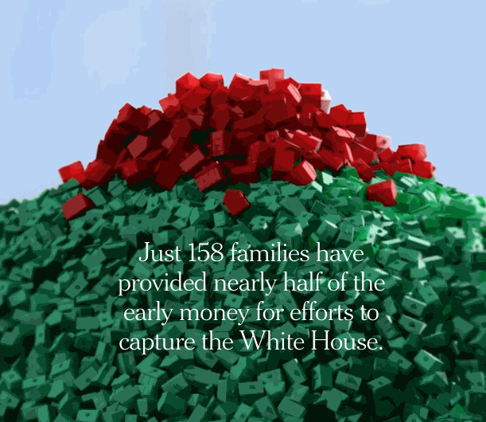用圖表以外的方式製作資料視覺化
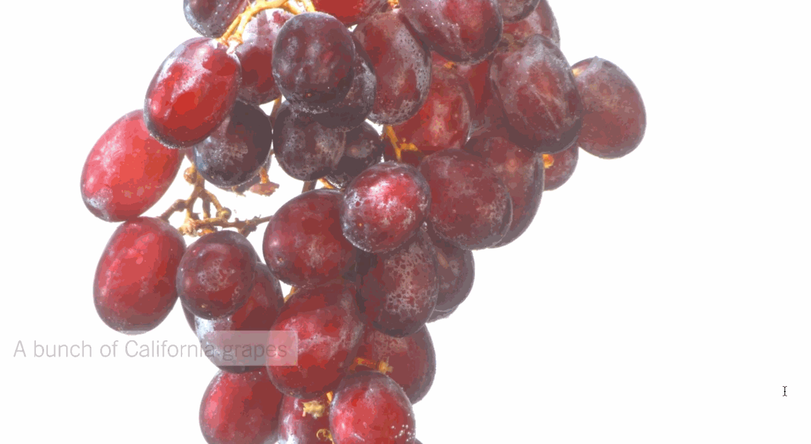聲音也能視覺化

衛星圖
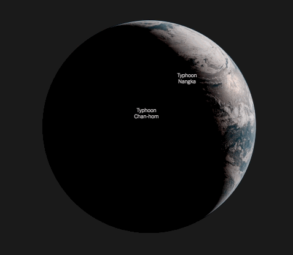下標註
“The annotation layer is the most important thing we do” —Amanda Cox
下標註
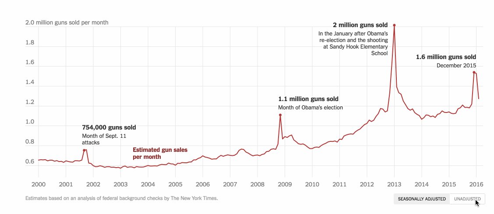無人機攝影
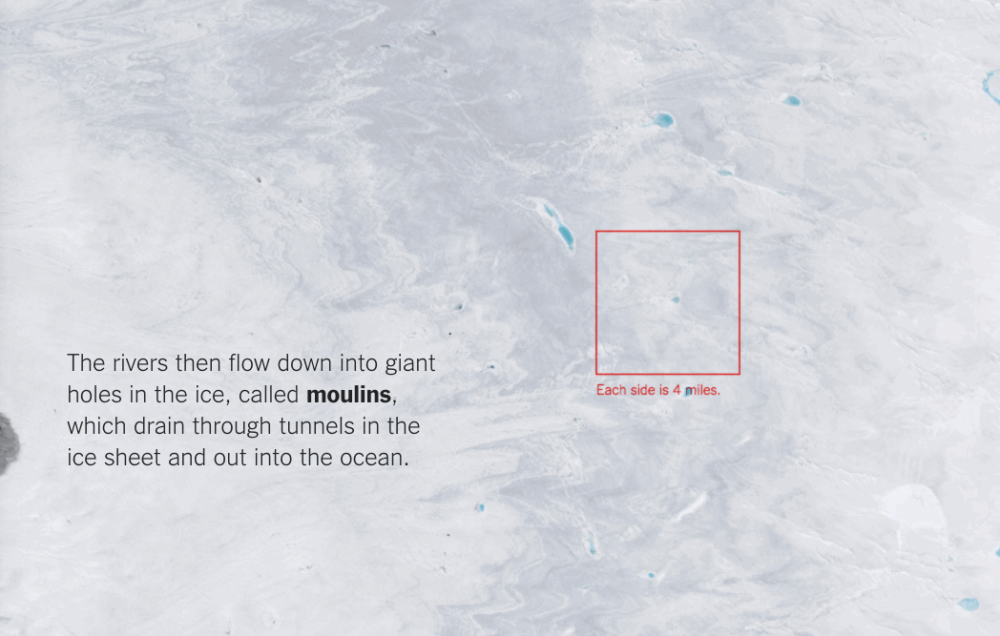虛擬實境
帶領讀者到他們平常無法到達的地方
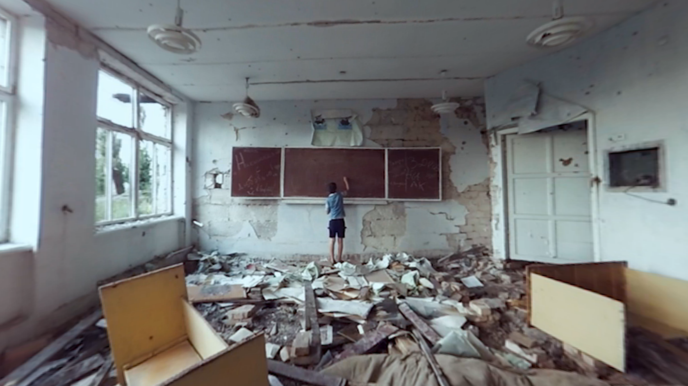資料視覺化也能虛擬實境
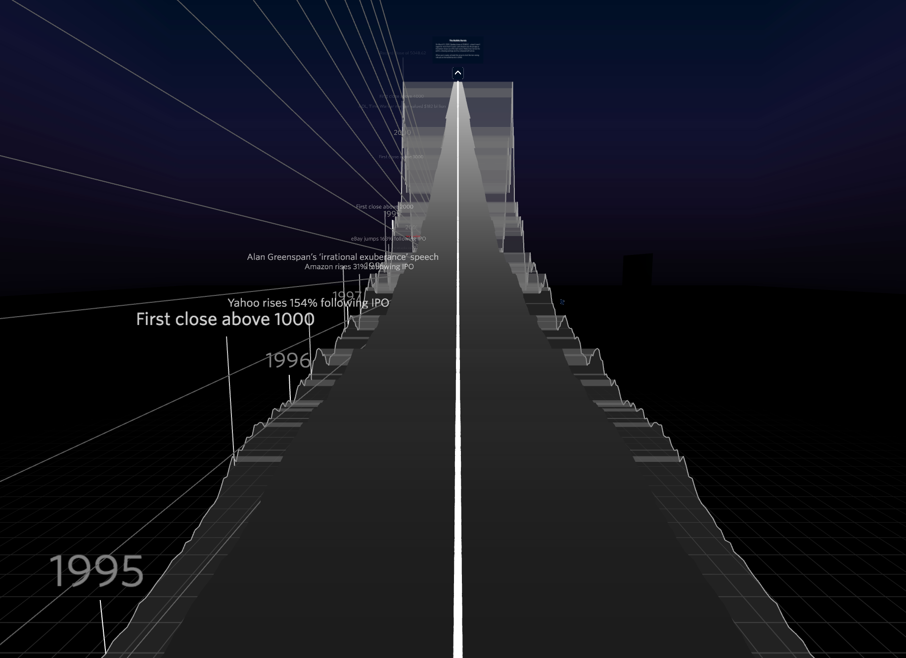資料視覺化也能虛擬實境
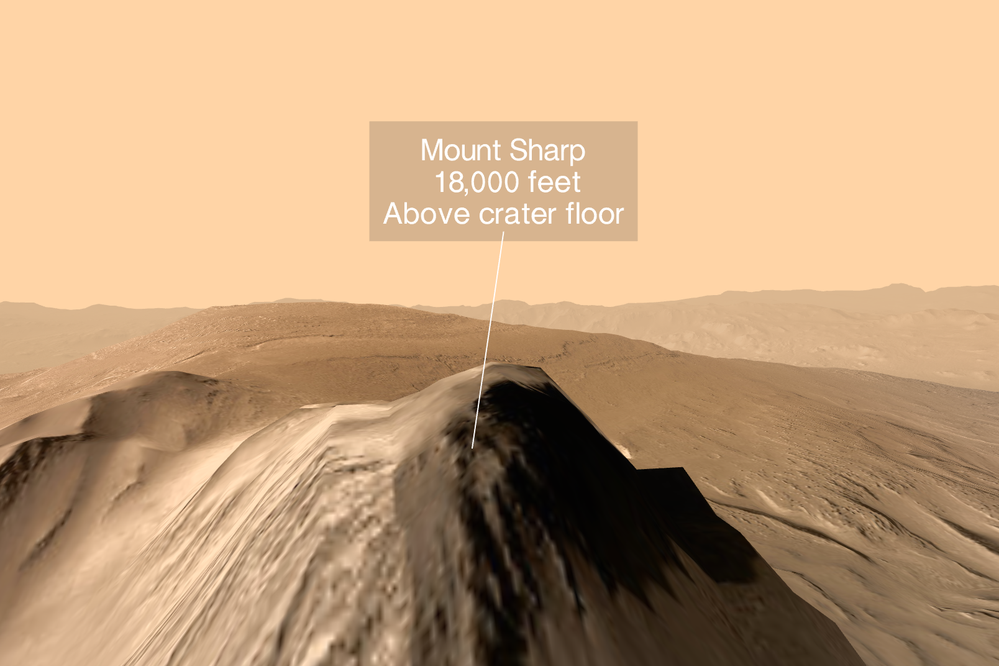workflow
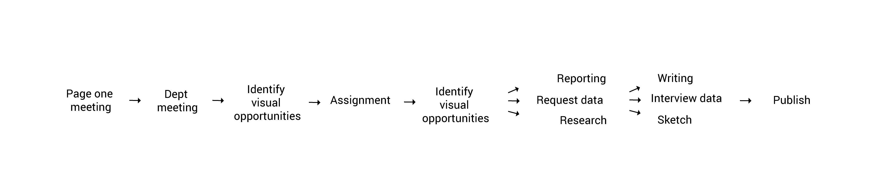workflow
You think it's done? NOT YET

行銷你的作品
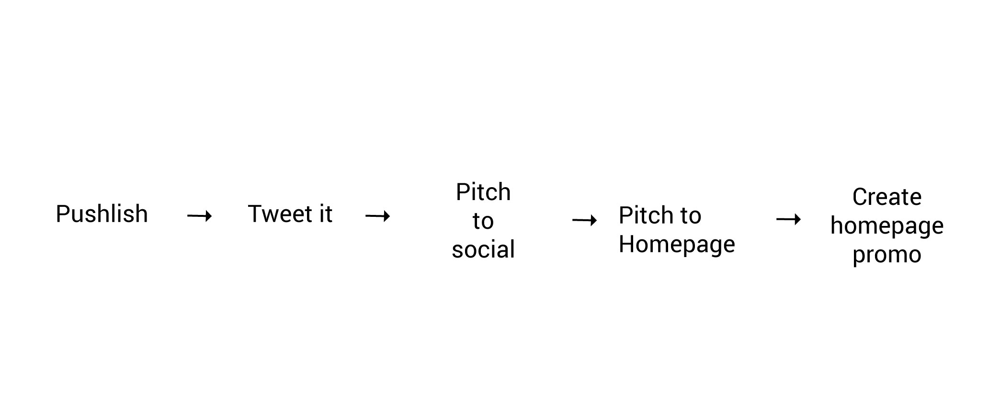Homepage promo

案例探討
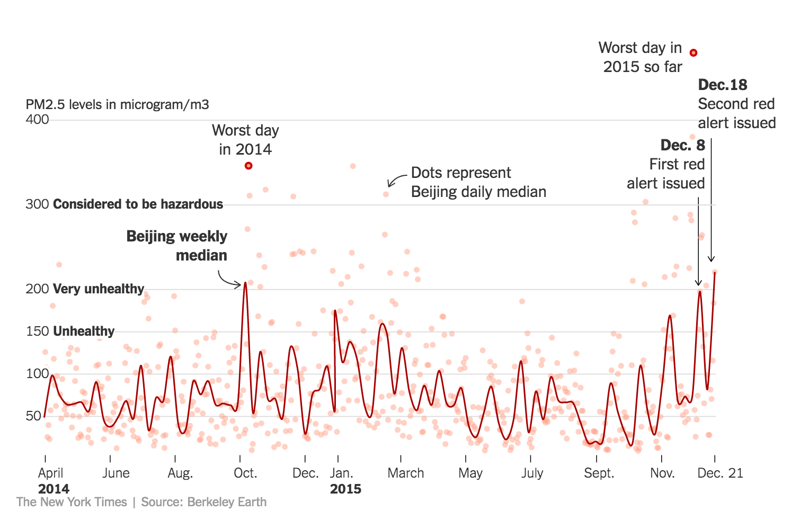案例探討